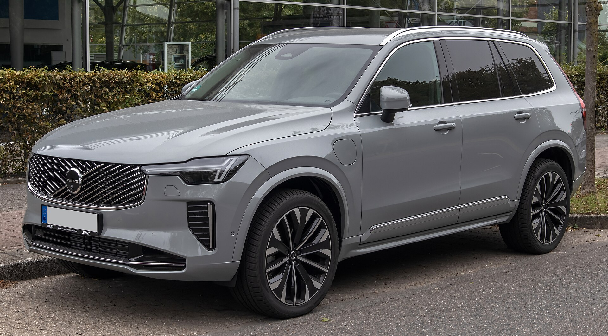

無骨なオフロードSUVではなく、静かで居心地のよい高級SUVで遠出を楽しみたい。そう考え始めたとき、レクサスRXとボルボXC90はスペック表のうえでは少し違う位置にいます。RXは2列5人乗りの国産クロスオーバー、XC90は3列7人乗りの輸入フラッグシップです。席数も大きさも揃った直接競合ではありません。それでもあえて並べるのは、この2台が「高級SUVの車内で、どんな時間を過ごしたいか」という好みをいちばん鮮やかに分けてくれるからです。
この記事の要点を先に読む
- レクサスRX（2列5人乗り・全幅1,920mm）は、静粛性と直進安定性に支えられたクルーザー感覚が持ち味。確認した購入者投稿では維持面の安心感を選んだ理由に挙げる声がある一方、駐車場選びやガソリン車の給油頻度、年式差や防犯対策が負担として語られています [S1][S3][S4][S6]。
- ボルボXC90（3列7人乗り・全幅1,960mm）は、北欧リビングのような落ち着きと家族・荷物を包む余裕が魅力。車幅や3列目の体格差、画面中心の操作感に加え、確認した投稿者の中には細かな不具合の体験やリセールを前提にしない買い方を挙げる例もありました [S5][S7]。
- どちらが格上かではなく、「約4.9mの車体を2列の静かなクルーザー感覚に振り切るか」「3列7人乗りの余白と北欧リビングの穏やかな空気感を選ぶか」という過ごしたい時間の軸で比べると違いがはっきりします [S1][S4][S5][S6][S7]。
駐車場で惹かれる「空気感」が、まるで違う
夫婦や少人数での遠出をすっきり快適にこなす5人乗りか、普段は広い荷室として使いながら、いざというときの3列目も残す7人乗りか。RXとXC90は席数も新車の価格帯もぴったり重なるわけではありませんが、どちらも「速さや悪路のタフさを誇示する車」ではなく、移動時間そのものを心地よく過ごす高級SUVとして同じ検討のテーブルに載りやすい2台です [S1][S4][S5]。
毎朝、駐車場で目に入る空気感からして対照的です。現行RXは大きく立体的に張り出したフロントマスクと低く構えた姿で、現代的な華やかさと存在感を前に出しています [S1]。購入者の投稿でも「デカいし、迫力があるので、どこでもまあ目立ちます」「車に乗ろうとして近づくたびに、満足感がこみ上げます」と、所有する高揚感を挙げる声が見られます [S6]。
対するXC90は、2025年2月の国内大幅改良でフロント周りをより現代的な意匠へ刷新しつつも [S5]、2025年改良前モデルのオーナーレビューでは「威圧感/オラオラ感/ギラギラ感がなく、スッキリしたデザインで景観にも溶け込む」「『さり気なく良い車に乗ってるね。』と思われるくらいが良い人向け」といった声が並びます [S7]。押し出しで気分を上げるRXと、清潔感や控えめな佇まいに惹かれるXC90という対比は、見た目の段階からはっきりしています [S1][S6][S7]。
レクサスRX：静かなキャビンで遠出を楽しむ代わりに、引き受ける気遣い
RXオーナーの投稿でまず印象的なのは、移動そのものの楽さと同乗者からの評判です。通常ハイブリッドの購入者は乗り心地を「大型のクルーズ船って感じ。」と表現し、白内装と夜間の照明がつくる雰囲気を含めて家族に好評だと綴っています [S6]。ガソリンモデルの購入者からも「同乗者である妻からとても評価が高いです。」「遠出の時などは疲れ知らずですね。」という声があり、上位ハイブリッドの所有者も「ゆっくり走って気持ち良い車に仕上がってる」と後席の満足度を挙げています [S6]。こうした居心地を支えているのが、1998年の初代以来RXが磨いてきた静粛性と乗り心地へのこだわりで、2025年2月の一部改良でも後席ドアへの遮音ガラス採用や吸音材の追加、駐車やUターンを助ける後輪操舵機能の設定拡大が行われました [S1][S2]。
今回確認したRXの購入者投稿の中には、「故障のリスクもかなり低いので安心できる。」「見て良し、乗って良し、リセール良し！」と、維持面の安心感や売却時への期待を選んだ理由に挙げる声が見られました（故障率や残価を裏付ける統計ではなく、購入者個人の実感・期待です） [S6]。一方で、複数の投稿で繰り返し挙がる負担が全幅1,920mmの大きさです [S4][S6]。周囲を映すモニターやセンサーが優秀だとする声がある反面、「でかい車なので駐車場の選定がシビア」「混雑していそうなときは妻の車で出かけます」「妻は取り回しが前車より悪いとの理由で運転したがりません」と、家族の運転や出先での駐車に気遣いが生じる現実が語られています [S6]。
同じRXでも動力選びと年式確認で日常の印象は変わります。現行RXは全車ハイオク指定で、純ガソリン、通常ハイブリッド、充電できるプラグインハイブリッド、走りを強めたターボハイブリッドの4種類を用意しています [S4]。プラグインハイブリッドの購入者が街乗り中心の電気走行で給油の少なさと静かさを喜ぶ一方、純ガソリン車では「ガソリンスタンドに行く機会が圧倒的に増えます。」という率直な声があります [S6]。また、2025年夏に購入したオーナーからは日射しの熱を通しやすいガラスへの強い不満が寄せられていましたが、2026年9月の一部改良では全車のフロントドアガラスに赤外線を抑える機能が追加されました [S3][S6]。加えて、オプションと社外セキュリティ込みで総額1,000万円を超えた購入記録もあり、人気国産SUVならではの防犯対策費まで予算に見込んでおく必要があります [S6]。

撮影・提供元、年式・市場、ライセンス
ボルボXC90：北欧リビングの心地よさと、輸入大型SUVならではの割り切り
2025年の大幅改良前モデルに乗るオーナーの投稿を読むと、XC90の持ち味は車内に流れる穏やかな時間にあることが伝わってきます。レクサスRXやNXから乗り換えた所有者は「ゆったりと優しい気持ちになれる車です。」と表し、疲れにくいシートや2列目・3列目を倒してフルフラットにできる使い勝手を高く評価しています [S7]。別の所有者も「自宅駐車場を通るたびにニヤニヤしてしまいます」と愛着を語り、2列目が3座独立のため両隣にチャイルドシートを置いても中央に座る妻が快適だと家族の満足を挙げています [S7]。長距離でのシートの出来についても「腰痛持ちの私が全く痛くなりません。」という声があります [S7]。2025年2月の大幅改良では、上の写真のように斜め格子のグリルとスリムなヘッドライトへ外観を刷新しつつ、ウッドとリサイクル素材の布地を組み合わせたダッシュボード、遮音材の追加、オプションの19スピーカー高級オーディオなど北欧リビング的な居心地をさらに磨きました [S5]。現行の日本仕様はマイルドハイブリッドとプラグインハイブリッドの2系統で、上位のプラグインハイブリッドには空気のバネで段差をしなやかにいなしやすいエアサスペンションが標準装備されます [S5]。
そのゆとりと引き換えに、XC90では車格と使い勝手の割り切りがはっきり求められます。全幅1,960mmは都内の狭い駐車場では厳しく、3列目の座り心地も体格によって受け止め方が分かれます（「身長160センチまでの方なら結構普通に乗れます」という声もあれば、「３列目はほぼ使えない」とする投稿もあります） [S5][S7]。乗り味も一般的な金属バネ仕様では街中の段差を硬めに感じる声があり、エアサスペンション仕様との印象差が挙がっています [S5][S7]。また、改良前モデルではエアコン操作まで縦長画面に集約された点や旧ナビの使い勝手に不満が多く寄せられていました（2025年2月改良で画面を9インチから11.2インチへ広げ、よく使う操作へ戻しやすいホーム画面中心の設計へ刷新されています） [S5][S7]。
維持や買い方についても、個別の体験が具体的に綴られています。購入4ヶ月で走行に支障のない不具合が4件あり保証で無償対応した所有者は、「多少の不具合に目を瞑れるかも判断基準にしたほうがいい」と記しています [S7]。また、別の所有者は「リセールは全く期待していません。」と書いたうえで試乗車上がりを選んで長く乗る方針を挙げており、確認した投稿の中には新車価格を踏まえて認定中古車や試乗車上がりを選んだ例がありました [S7]。
約4.9mの器をどう使い、どう付き合うか
RX（全長4,890mm・全幅1,920mm）とXC90（全長4,955mm・全幅1,960mm）は、どちらも全幅1.9mを超える大型SUVです [S4][S5]。狭い駐車場の制約や大柄な車体相応の燃料・維持コストはどちらを選んでもついて回ります（RXは全車ハイオク指定 [S4]、XC90も改良前ガソリン系モデルの所有者から燃料費負担が挙げられています [S7]）。
その前提を踏まえると、2台を分けるのは、ほぼ同じ約4.9mの車体を「2列5人乗りの静かなクルーザー」として味わうか、「3列7人乗りとフルフラットの余白を備えた北欧リビング」として使うかという時間の過ごし方です [S1][S4][S5][S6][S7]。あわせて、確認した投稿ではRX側で故障や売却時への安心感を選んだ理由に挙げる声、XC90側でリセールを前提にせず認定中古車や試乗車上がりを選んで長く乗る例も見られ、何を期待してどう付き合いたいかを整理する手がかりになります [S6][S7]。
| 比べる視点 | レクサス RX（2列・5人乗り） | ボルボ XC90（3列・7人乗り） |
|---|---|---|
| 器と席数の使い方 | 全長4,890mm × 全幅1,920mm・5人乗り。夫婦や少人数で余裕を持って乗る構成 [S1][S4] | 全長4,955mm × 全幅1,960mm・7人乗り。普段は広い荷室、必要なときに3列目を使う構成 [S5][S7] |
| 駐車場と車内の空気 | 立体的な造形の華やかな存在感。静粛性と夜間照明が際立つクルーザー感覚 [S1][S2][S6] | 押し出しを抑えた清潔感ある佇まい。ウッドと布地が作る穏やかな北欧リビング感 [S5][S7] |
| 遠出で心が動きやすい点 | 静かなキャビン、高速の安定感、夜間照明や後席の快適さ [S2][S6] | 飛ばす気にならないゆったり感、疲れにくいシート、2列目3座独立やフルフラットの余裕 [S5][S7] |
| 投稿に見られた期待・買い方の例 | 故障の少なさや売却時への安心感を選択理由に挙げる投稿がある（個人の期待・実感） [S6] | リセールを前提にせず、認定中古車や試乗車上がりを選んで長く乗る投稿例がある [S7] |
| 納得しておきたい負担 | 幅1,920mmの駐車場選びと家族の取り回し、純ガソリン車の燃費、年式差や防犯対策費 [S3][S4][S6] | 幅1,960mmの取り回し、3列目の体格差、画面中心の操作感、細かな不具合への向き合い方（個別投稿より） [S5][S7] |
SOURCES & NOTES
参照資料
本文の数字・説明がどの資料に基づくかは、各節から確認できます。メーカーによる説明と、その意味を読む編集上の解釈は区別しています。
- S1 · トヨタ自動車株式会社（Toyota Global Newsroom）LEXUS、新型「RX」を発売 －LEXUSの変革への挑戦を象徴するグローバルコアモデルの進化－2022-11-18 / 確認 2026-11-25
5代目RXの設計意図（スピンドルボディ、低重心なスタンス、上質な乗心地と静粛性）、1998年誕生からの系譜、全長4,890mm・全幅1,920mmの主要諸元の根拠。
- S2 · トヨタ自動車株式会社（Toyota Global Newsroom）LEXUS、「RX」を一部改良2025-02-27 / 確認 2026-11-25
2025年2月一部改良の内容（リヤドアへのアコースティックガラス採用・吸音材追加による静粛性強化、後輪操舵DRSのRX450h+/RX350h AWD車への設定拡大、室内イルミネーション改良）の根拠。
- S3 · トヨタ自動車株式会社（Toyota Global Newsroom）LEXUS、「RX」を一部改良2026-09-30 / 確認 2026-11-25
2026年9月一部改良の内容（全車フロントドアガラスへのIRカット機能追加、デジタルインナーミラー・前後ドラレコ標準装備拡充）の根拠。
- S4 · トヨタ自動車株式会社（LEXUS公式サイト）レクサス RX500h / RX450h+ / RX350h / RX350 主要諸元表（PDF）2026-09-30 / 確認 2026-11-25
現行RX全グレードの乗車定員5名、全長4,890mm・全幅1,920mm・全高1,700〜1,705mm、4種類のパワートレーン構成、無鉛プレミアムガソリン指定の根拠。
- S5 · ボルボ・カー・ジャパン株式会社（Volvo Car Japan Press Site）さらに進化した、史上最高のボルボXC90登場（公式プレスリリースPDF・主要諸元付）2025-02-13 / 確認 2026-11-25
大幅改良型XC90の全長4,955mm・全幅1,960mm・全高1,775mm・乗車定員7名、斜め格子グリル・スリムなヘッドライト、100%リサイクル素材のテキスタイルとウッドパネル、11.2インチの新しい画面設計、Bowers & Wilkins 19スピーカー、マイルドハイブリッド（新ダンパー）とプラグインハイブリッド（エアサス標準装備）および遮音材追加の根拠。
- S6 · 価格.comレクサス RX 2022年モデル レビュー評価・評判2026-11-18 / 確認 2026-11-25
現行RXの購入者投稿（外観の存在感、白内装や夜間照明、クルーザーのような乗り心地と後席・妻からの好評、維持面の安心感や売却時への期待を挙げる個人の声、1,920mm幅による駐車場や家族の運転の気遣い、純ガソリン車の給油頻度、旧年式のIR非対応ガラスへの指摘、社外セキュリティ込みの予算感）。
- S7 · 価格.comボルボ XC90 2016年モデル レビュー評価・評判2025-12-01 / 確認 2026-11-25
XC90（2025年改良前モデル）の所有者投稿（威圧感の少ない清潔感ある外観、北欧内装と疲れにくいシート、ゆったり感、2列目3座独立やフルフラット、3列目居住性の体格差、1,960mm幅の駐車制約、金属バネとエアサスの印象差、画面集約操作への不満、ガソリン系モデルの燃料費負担、保証対応の細かな不具合の体験、リセールを前提にせず認定中古車・試乗車上がりを選んだ個別例）。
編集・訂正履歴
：初版公開。メーカー公式発表・主要諸元とオーナーの投稿記録をもとに構成しました。